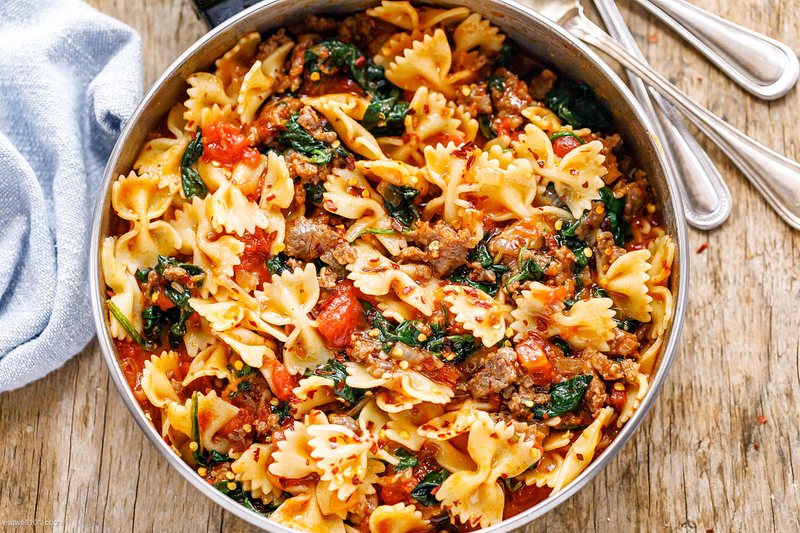

Field Roast Pasta
Description
This is my upgraded version of basic pasta and sauce. I like using a jar of sauce to cut down on cook time while imbuing it with the flavor of freshly sauteed garlic and onions. The Field Roast gives it some protein kick, while saving a little of the starchy pasta water helps thicken the sauce to give it a little more texture.
Ingredients
- Pasta (preferably farfalle)
- A jar of your favorite pasta sauce
- Field Roast sausage (apple sage flavor)
- Garlic
- Yellow onion
- Cooking oil
- Salt
Steps
- Slice the Field Roast thinly, on a bias
- Mince the garlic and chop the onion
- Boil water in a large pot, adding a heaping chunk of salt
- Warm a small pan on medium heat
- When the pan is hot, add some oil and let it warm up
- When the oil is hot, add the sliced Field Roast, stirring occasionally
- In a separate pot, heat oil and add garlic
- As the garlic warms, add the onion
- When the pot is boiling, add the pasta
- As the pasta and Field Roast are cooking, add sauce to the garlic and onion when the onion has become transparent
- When the Field Roast is evenly browned, remove it from heat
- Taste the pasta. When it is still a little crunchy (just before al dente), drain while reserving a small amount of the pasta water
- Add the pasta, reserved water, sauce, and Field Roast and continue to simmer as the sauce cooks down and becomes less watery
- When the sauce appears to have thickened up and have a less watery consistency, remove from heat and chill for a few minutes
- Enjoy your delectable Field Roast Pasta and top with your favorite Parmesan cheese (or vegan alternative)!